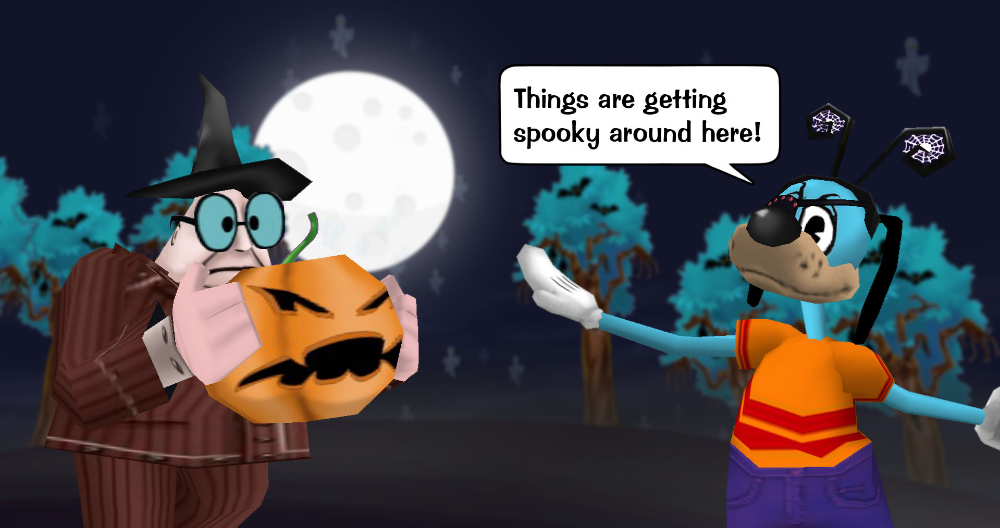
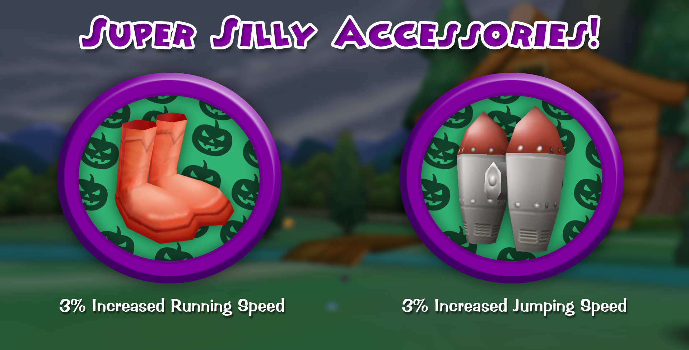

Halloween Haunts Toontown
Posted by: The Toontown Relived Team on October 26, 2019 at 9:46 PM
It's that time of year again! Ghouls and Goblins are out giving Toontown a fright. Halloween has hit the streets of Toontown and has brought a bunch of scary new changes!Shopkeepers all over Toontown have teamed together to give out jellybeans for Trick-or-Treating! That's not the only thing though, once you complete the Trick-or-Treat scavenger hunt, you not only get the pumpkin head curse, but also a brand new Spooky Effect! Once obtained, you can toggle this from your Accessory Trunk! Hey, speaking of accessories--Clarabelle has teamed up with the scientist at Loony Labs to concoct brand new effects added to accessories! Imagine running at crazy speeds or jumping all around Toontown all by purchasing one of these Super Silly Accessories!This Halloween is insanely spooky, I'm getting the chills just writing this blog post. Want to know how to obtain your first Spooky Effect? Just unscramble and visit these locations and say "Trick-or-Treat". Once you've trick-or-treated to all six locations, you will be given your first Spooky Effect! This update is so jam-packed that it can't all fit in one blog post! View the latest release notes to get the scoop on the spooky additions to Toontown! Don't forget that on October 31st you can say "Boo!" to Flippy to make your species black! That's it for this blog post folks! Did we scare you? No? Darn, maybe next time.
This update is so jam-packed that it can't all fit in one blog post! View the latest release notes to get the scoop on the spooky additions to Toontown! Don't forget that on October 31st you can say "Boo!" to Flippy to make your species black! That's it for this blog post folks! Did we scare you? No? Darn, maybe next time.